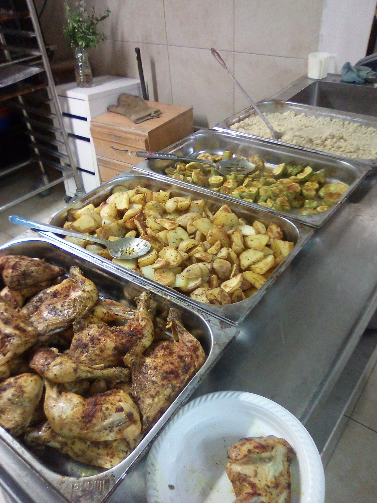
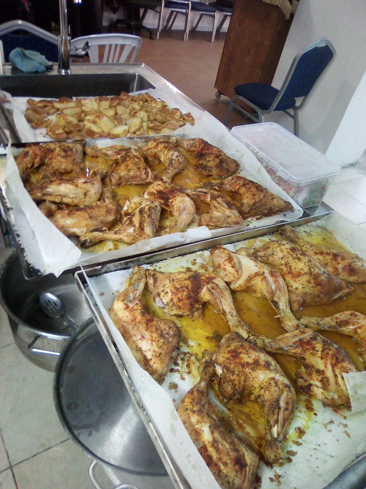
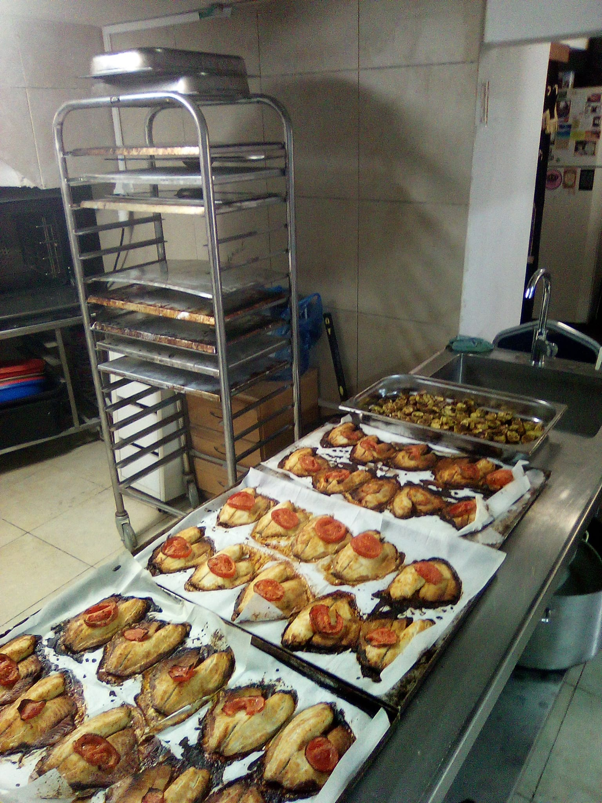
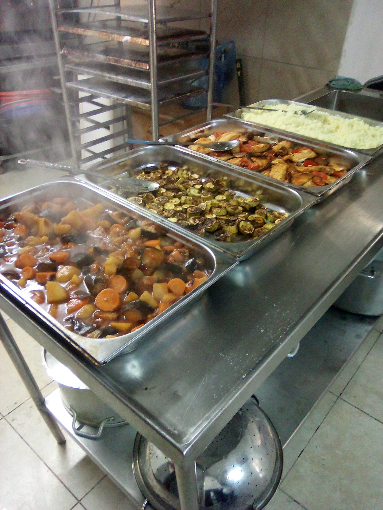
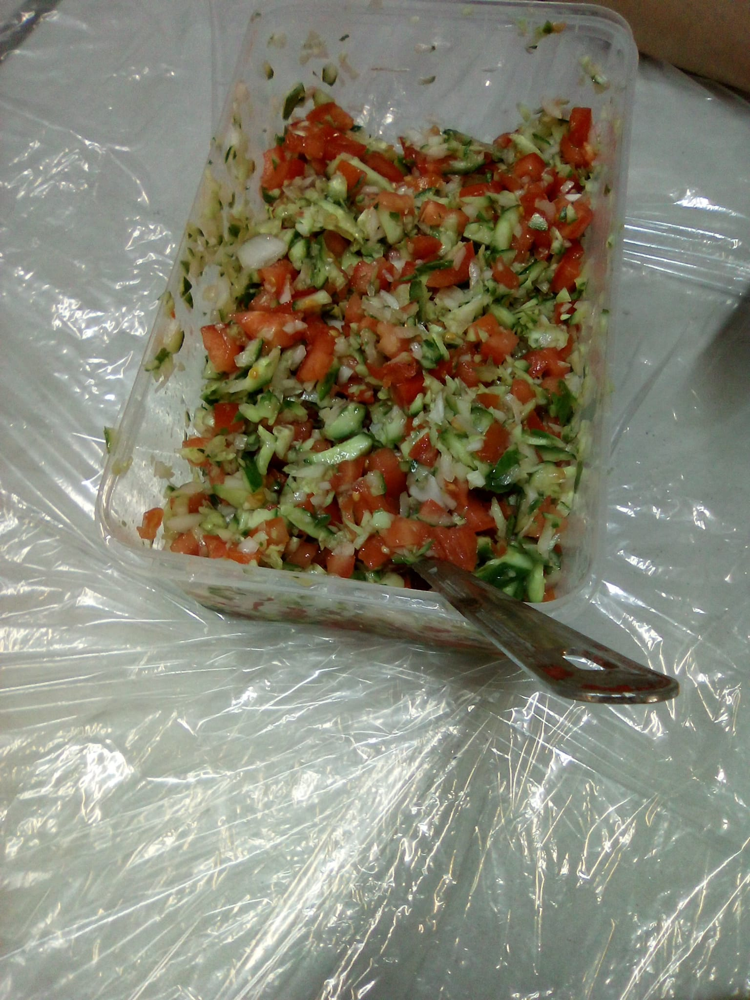
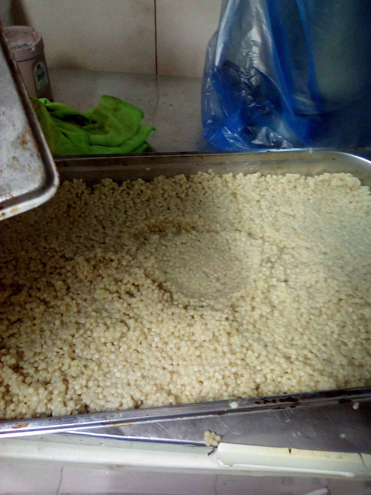

בזכותכם — אף אחד לא יישאר רעב
ארוחות חמות חינם לנזקקים, כל ימות השנה, בכבוד ובאהבה.
בית התבשיל בפתח תקווה הוא בית חם הפועל מתוך מטרה אחת פשוטה: שאף אדם לא יישאר רעב. מדי יום אנו מחלקים ארוחות חמות ומזינות, ללא כל תשלום, לכל מי שזקוק — תושבים מאזורים מוחלשים, קשישים, משפחות במצוקה וכל מי שדופק בדלתנו. כאן כולם מתקבלים בכבוד, בחיוך וביחס של משפחה.
ארוחות חמות ומזינות, ללא כל תשלום ובלי תנאים.
כל אדם מתקבל בברכה, בלי שאלות ובלי בושה.
נבנה ופועל בזכות מתנדבים ותורמים מהקהילה המקומית.
פעילות שוטפת כל השנה, וגם בחגים ובמועדים.
ארוחה חמה במקום, בכל יום, בסביבה נעימה ומכבדת.
הבאת ארוחות עד הבית למי שמתקשה להגיע.
סיוע מיוחד לקראת חגים ומועדים — שתהיה שמחה לכולם.
הצצה אל המטבח, האוכל והארוחות החמות שאנחנו מכינים בכל יום.






כל תרומה הופכת לארוחה חמה על שולחנו של מי שזקוק. בזכותכם זה קורה.
ארוחה חמה לאדם רעב
ארוחות לכל המשפחה
שבוע שלם של ארוחות
חודש של נתינה
לשאלות ניתן לפנות גם בטלפון או בוואטסאפ: 052-378-5658
כל יום, 08:00–22:00
פתוחים כל ימות השבוע
לכל שאלה, תרומה או התנדבות — נשמח לשמוע מכם.